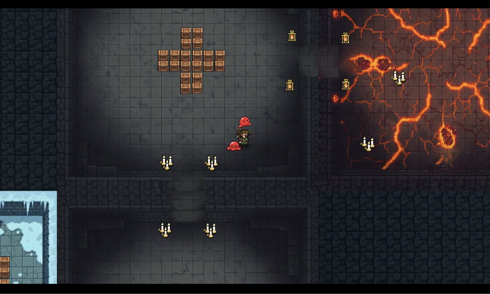

ForgeInTheFridge
Jeu vidéo type Survivors-like développé sur Godot Engine
Contexte & Objectif
ForgeInTheFridge est un jeu d'action et de survie (rogue-lite) inspiré de Vampire Survivors. Le concept repose sur la gestion de vagues d'ennemis : le joueur doit survivre et éliminer un nombre précis d'adversaires pour débloquer l'accès à la salle suivante.
Pour offrir de la rejouabilité, le jeu propose 3 classes de personnages distinctes, chacune possédant ses propres statistiques et mécaniques de combat.
Besoin technique : Concevoir un jeu vidéo complet et performant de A à Z en utilisant le moteur Godot et son langage natif, le GDScript.
Stack Technique
Démo & Déploiement

Challenges Techniques Rencontrés
-
Architecture des 3 Classes
Défi : Intégrer 3 classes de personnages jouables sans dupliquer le code pour les mouvements de base ou la gestion de la vie, tout en gardant des attaques uniques pour chacun.
Solution : J'ai utilisé la programmation orientée objet en GDScript en créant une scène "Joueur" de base (Classe parent) gérant les déplacements et la santé, dont héritent les 3 classes spécifiques (Classes enfants) qui implémentent leurs propres mécaniques d'attaque. -
Performances face aux Hordes d'Ennemis
Défi : Dans un "Survivors-like", des dizaines d'ennemis peuvent apparaître à l'écran en même temps. Il fallait éviter que le jeu ne ralentisse (chute de FPS).
Solution : J'ai optimisé l'instanciation (spawn) des ennemis et la détection des collisions dans Godot, en m'assurant que les entités mortes soient correctement supprimées de la mémoire (viaqueue_free()) pour garder le jeu fluide.
Rétrospective Personnelle
Ce que j'ai appris :
- Maîtrise de l'écosystème Godot : Compréhension approfondie du système de Scènes et de Nœuds (Nodes) pour structurer le projet.
- Programmation GDScript : Utilisation des signaux (Signals) pour faire communiquer les différents éléments du jeu (ex: l'UI, le joueur, et le gestionnaire de salles).
- Logique de Game Design : Équilibrage de la difficulté (rythme d'apparition des ennemis) et conception d'une boucle de gameplay (Game Loop) accrocheuse.